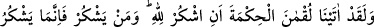
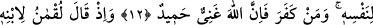
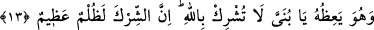
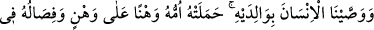
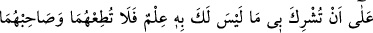
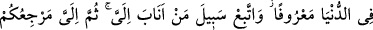
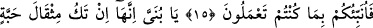
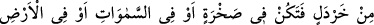
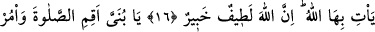
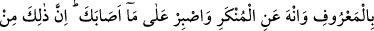
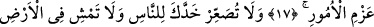
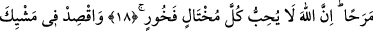
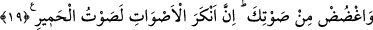
LOKMAN (A.S.)’IN
OĞLUNA ÖĞÜTLERİ
12. Andolsun biz Lokman’a: “Allâh’a şükret!” diyerek hikmet verdik. Şükreden
ancak kendisi için şükretmiş olur. Nankörlük eden de bilsin ki, Allah hiçbir şeye
muhtaç değildir, her türlü övgüye lâyıktır.
13. Lokman, oğluna öğüt vererek: Yavrucuğum! Allâh’a ortak koşma! Doğrusu
şirk, büyük bir zulümdür, demişti.
14. Biz insana, ana-babasına iyi davranmasını tavsiye etmişizdir. Çünkü anası onu
nice sıkıntılara katlanarak taşımıştır. Sütten ayrılması da iki yıl içinde olur. (İşte
bunun için) önce bana, sonra da ana-babana şükret diye tavsiyede bulunmuşuzdur.
Dönüş ancak banadır.
15. Eğer onlar seni, hakkında bilgin olmayan bir şeyi (körü körüne) bana ortak
koşman için zorlarlarsa, onlara itâat etme. Onlarla dünyâda iyi geçin. Bana
yönelenlerin yoluna uy. Sonunda dönüşünüz ancak banadır. O zaman size, yapmış
olduklarınızı haber veririm.